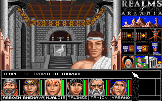
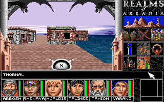
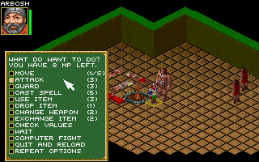

名稱：阿卡尼亞傳說1／阿卡尼亞王國1／阿卡尼亞之地1：命運之刃 (Realms of Arkania: Blade of Destiny，英文版)
簡介：Attic 1992年出品的角色扮演遊戲，最初為德文，1993年由Sir-Tech翻成英文並代理
發行，台灣則由第三波代理進口。遊戲以直角3D畫面顯示，採團隊回合策略制戰鬥 [待補]。



備註：本版為3.09光碟版
保護：磁片版為手冊密碼，光碟版無保護。磁片版破解碼：
BLADEM.EXE
FF 37 9A 55 3F 00 00 83 C4 08 0B C0 75 03
-- -- -- -- -- -- -- -- -- -- -- -- 90 90
或
F3 A6 8A
-- A4 --
備註：磁片版安裝時，若持續要求放入磁片，可進行下列修改：
INSTALL.EXE
89 46 FC 0B C0 75 03
-- -- -- -- -- EB --
83 7E FC 00 75 03
-- -- -- -- EB --
檔案：bod-disk.rar = 3.00磁片版